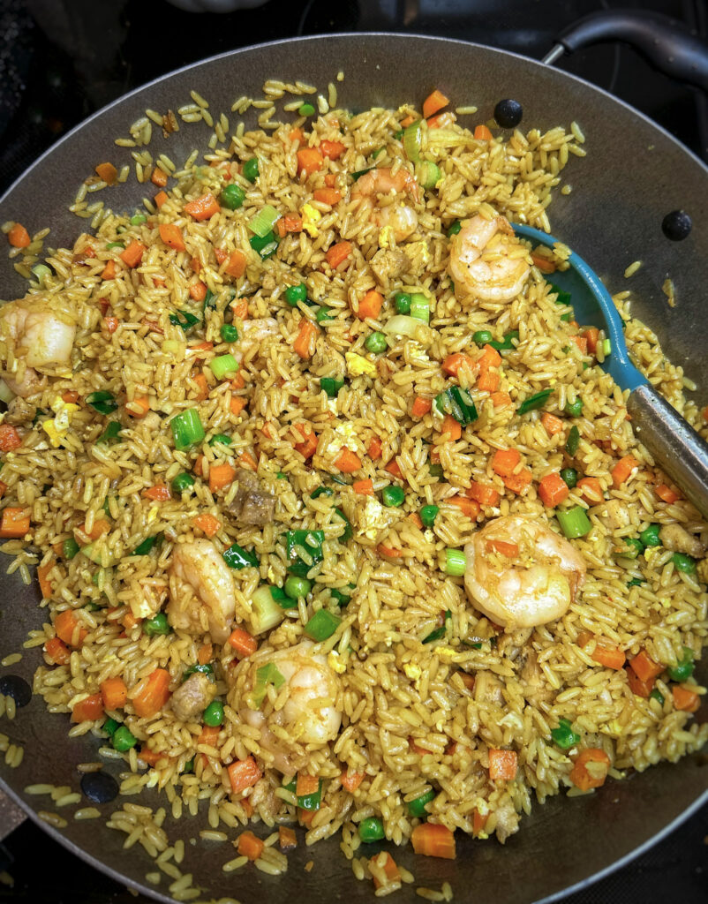

Fried Rice

Ingredients
- Rice
- Mixed veggies(peas and carrot)
- Meats
- Eggs
- Spices
- Aromatic
- Olive Oil
Steps
-
In a regular sized pot, add olive oil and caramelize chopped onions .
Season with salt, curry,chicken bullion and stir well
-
Add washed rice to the pot and stir fry for 5 minutes or until some rice
grains begin to brown. Then add soy sauce, chicken stock and ginger
garlic paste. Cover pot and allow the rice steam on low heat for 22
minutes. Set aside to cool
-
Preheat olive oil in a separate pan or wok and stir fry chicken for a 5
minutes; set aside, stir fry shrimp for 3 minutes ; set aside. Then,
Stir fry carrots and peas for a 2 minutes , season with salt, pepper,
bullion and chilli powder and set aside.
-
Add a little more oil to the pan to fry eggs, once they are fried and
scrambled add cooled rice. Then add stir fried chicken, shrimp and
veggies to the fried pot. Mix well and fry rice for 7 minutes
-
Adjust seasoning according to your taste and add chopped spring onions
to garnish
- Take the pot off the heat and serve.